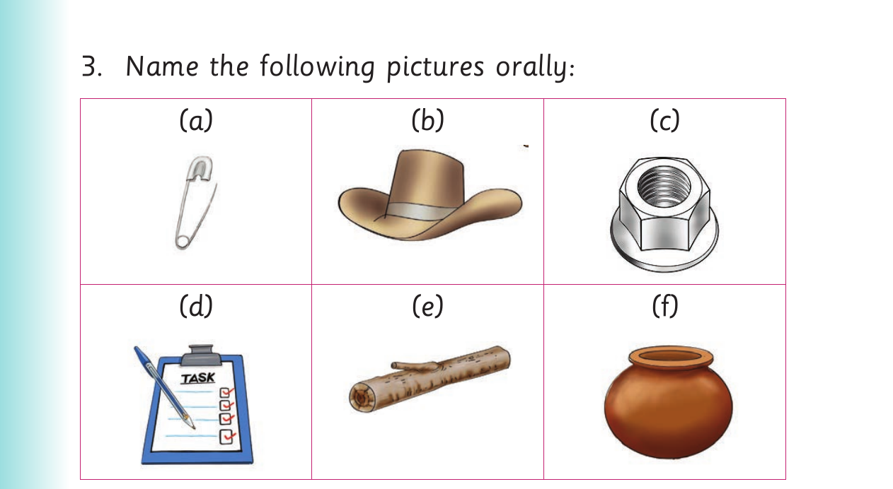

Replacing middle sounds - Activity 2

3. Name the following pictures orally: (a) (b) (c) (d) (e) (f)
Activity 2
1. Pronounce the following words: pan , mud , ten , bat , bed , jet , cat , fun and bun .
2. Replace the middle sound of each word in (1).
3. Pronounce the new words you have formed in (2). 4. Read the following sentences aloud: (a) He looks mad in the mud. (b) A bat does not bet. (c) That is a bad bed. (d) Patrick pats cats. (e) Do not put a pen in a pan. (f) A football fan is having fun. (g) A cat can cut meat with teeth.